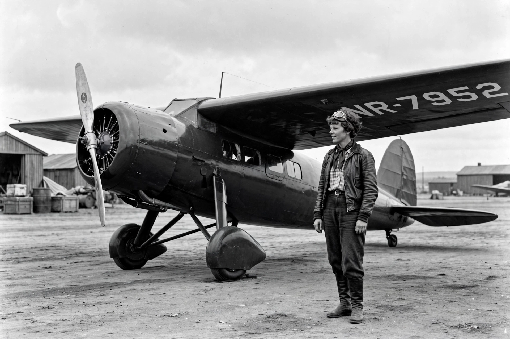

Amelia Earhart
From Wikipedia, the free encyclopedia

Earhart with her Lockheed Vega.Amelia Mary Earhart (1897–disappeared 1937) was an American aviation pioneer and writer, the first female aviator to fly solo across the Atlantic Ocean (1932) and a best-selling author who promoted women\'s flying. Setting many records, she championed women pilots through the Ninety-Nines organisation. Earhart disappeared over the central Pacific near Howland Island on 2 July 1937 during an attempt to circumnavigate the globe; despite a huge US Navy search, no trace was confirmed, and her fate remains one of aviation\'s great mysteries.
Early life and fame
Born in Kansas, Earhart worked as a nurse\'s aide and social worker; a ten-minute air ride in 1920 convinced her to fly. She bought a Kinner Airster, set a women\'s altitude record in 1922, and in 1928 crossed the Atlantic as a passenger — an experience she likened to being \'a sack of potatoes\', vowing to repeat it solo.
Solo Atlantic and records
On 20–21 May 1932, five years after Lindbergh, she flew a Lockheed Vega alone from Newfoundland to Northern Ireland in 14 hours 56 minutes — the first woman (and second person) to do so solo. Further records: first person to fly solo from Honolulu to Oakland (1935), and nonstop transcontinental flights. Her book The Fun of It and lecture tours made her a celebrity.
Final flight and theories
With navigator Fred Noonan, she set out in a Lockheed Electra in June 1937, completing most of the world flight before vanishing on the leg to Howland Island after radio calls reported low fuel and no sight of the island. Theories include ditching at sea (the US Navy\'s official conclusion), landing on Nikumaroro atoll, or capture; expeditions still search for wreckage.